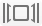

Muttlight: MailDir files on MacOS
Muttlight is a MacOS application that changes the appearance of search results for emails stored in MailDir directories from this:
{kind=link}
—where the filenames are rather cryptic, the contents are not shown, and it's not possible to open the file directly in mutt—into this:
{kind=link}
In fact, the first screenshot was made artificially: the mail files are not even properly indexed without Muttlight.
In other words, Muttlight improves the integration of files stored in MailDir format, allowing you to use Mutt, or any other MailDir-based client,1 to manage your mail from the terminal without foregoing MacOS' features for browsing and searching files.
Installation
Download the file below, open it, and copy the Muttlight bundle into
either $HOME/Applications or /Applications.
Muttlight is copyright © Timothy Bourke 2017. It comes with absolutely no warranty or support. It is free software made available under the GPLv2 license. Muttlight incorporates functionality from the Mutt email client.
After installing Muttlight, launch it and the dialog box below will appear.
{kind=link}
The text “Looking for extensions...” indicates that Muttlight is searching your computer for files stored in MailDir directories.2 As files are found, their (abbreviated) extensions are added to the list. The extensions are typically hostnames of machines on which you run, or have at some point in time run, fetchmail or some other program that downloads mail. They typically appear in the names of MailDir files along with timestamp information and flags. They are necessary for creating the required file associations for searching, previewing, and opening files.
(A warning is displayed if any DoveCot files are found. Muttlight cannot handle them as the file extensions also include message size information.)
Select the extensions that you want to register and click “Apply”. The following sections describe how you can test Muttlight and resolve any difficulties.
Previewing files
Open a finder window on a MailDir subdirectory (normally called
cur or new).
If you see something resembling the image below, that is, with empty
document icons, then Muttlight is not yet working properly on your
machine.
{kind=link}
Close the window, open a terminal, and run the following commands to reset the Quick Look manager and its cache.
qlmanage -r cache
qlmanage -r
Then reopen the finder window. It should resemble the one below, that is,
with each thumbnail showing the file contents.
Pressing ⌘-Y, or switching to ‘Cover Flow’—with the

button or ⌘-4—should show larger previews.
{kind=link}
If the previewing is still not working, ensure that Muttlight has been registered with the ‘Launch Services’ database by running the following commands from a terminal window (updating the path as required), and repeating the above steps.
export MUTTLIGHT=$HOME/Applications/Muttlight.app
touch $(MUTTLIGHT)/Contents/MacOS/Muttlight
/System/Library/Frameworks/CoreServices.framework/Frameworks/LaunchServices.framework/Support/lsregister -f $(MUTTLIGHT)
Failing that, you can get some debugging information by running
qlmanage -d 4 -p <path-to-mail>
and manually specifying the path to a mail file in a MailDir directory.
Opening files
Opening a mail file, by pressing ⌘-O in the
Finder, or pressing enter in the
Spotlight window, should open up a terminal window,
using iTerm2 if available, and
Terminal otherwise, with Mutt open on the selected mail.
This feature is based on a shell script,
Muttlight.app/Contents/MacOS/Mutt\ Launcher.app/Contents/Resources/script
that can be edited directly. It has not been tested extensively and any suggestions or, even better, pull requests are welcome.
Searching with Spotlight
Spotlight searches can be run from a graphical interface by either clicking
on the button in the
menu bar or pressing ⌘-SPACE.
They can also be run from the command line with mdfind.
That said, your mail files cannot appear in the search
results until they have been indexed.
You can reindex a particular directory from
Spotlight preferences,
or using the command mdimport -d 1 <path>.
Alteratively, the Spotlight index for a volume
(<volume-path>/.Spotlight-V100) can be completely rebuilt
by running sudo mdutil -E <volume-path>,
but this may be very time consuming.
Is all this really necessary?
Sadly, it seems so, which is annoying since the native Mail
application can already index and preview .eml files.
Unfortunately, I do not know how to trick it into also treating files in
MailDir directories and the code is not publically available so I cannot
propose to patch it. Renaming all of your MailDir files to use the
.eml extension would give all of the features described above
(with more sophisticated previewing), but Mutt, fetchmail, etcetera, would
no longer work correctly. Further explanations and ideas are given in
the
design notes.